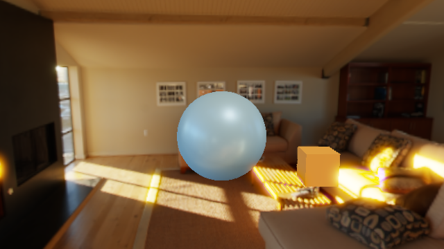

Aggregate: PASS · Scene render and fixture probes
Run: t8-20261001T063913Z-1027 · Started: 2026-10-01T06:39:13Z · Completed: 2026-10-01T06:39:17.051181+00:00
Environment: Windows-10-10.0.26200-SP0 · Python 3.10.9 · Commit 7d9bbedaf660042c89dc5276bc9ea52b5191d2ca
Fixture exit: 0 · Scene exit: 0 · Case schema: valid
| Probe | Status | Expected | Observed |
|---|---|---|---|
| lkg_on_reload_error | PASS | {"kind": "Bool", "value": true} | {"kind": "Bool", "value": true} |
| generation_commit_boundary | PASS | {"kind": "Bool", "value": true} | {"kind": "Bool", "value": true} |
| stale_ticket_rejected | PASS | {"kind": "Bool", "value": true} | {"kind": "Bool", "value": true} |
Launcher exited after the bounded screenshot run. No golden reference is configured, so image comparison was not run.

asset-events.json metrics.json launcher.log graph.txt stdout stderr output.png reference.png diff.png
reference.png and diff.png are deterministic 1×1 placeholders because this case has no approved golden reference.